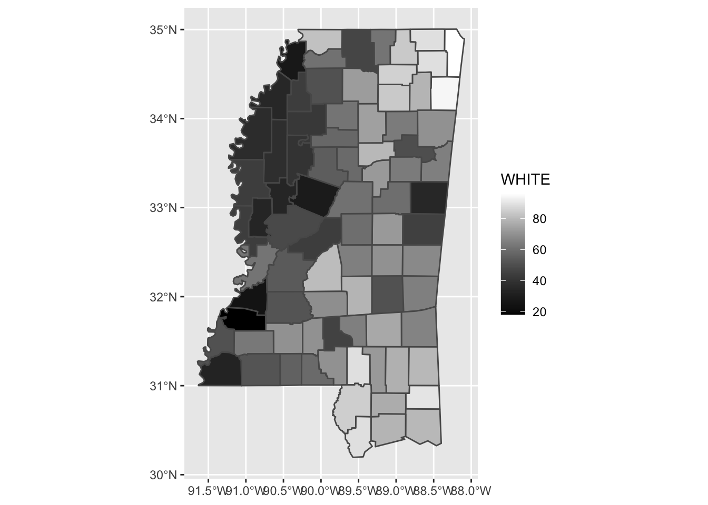
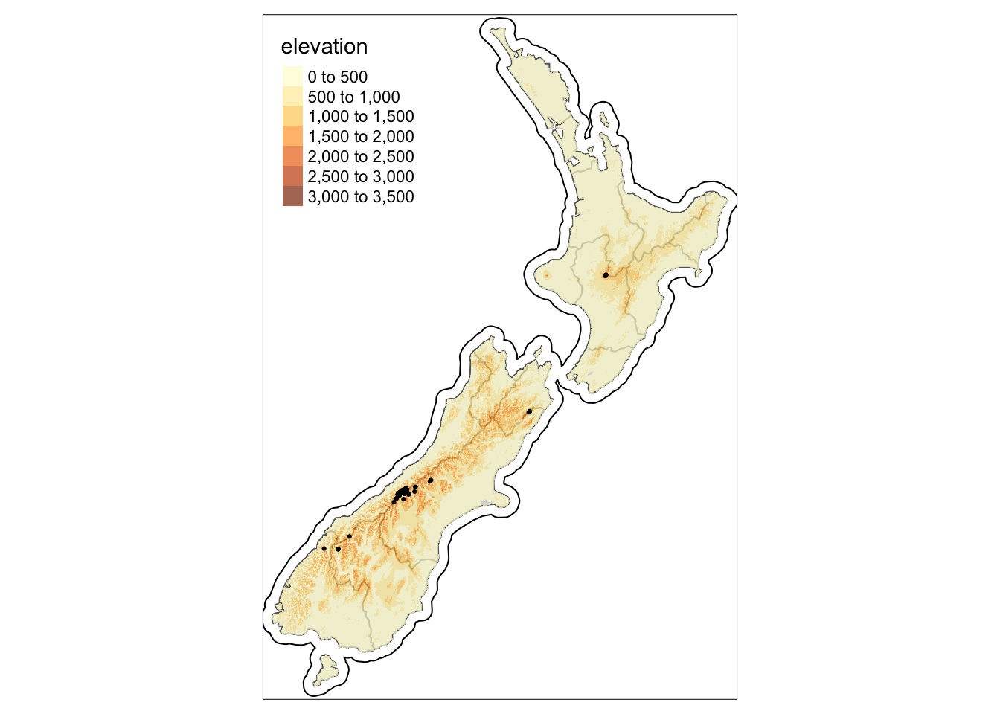

Tuesday, August 30, 2022
Today
- More graphing examples
- How R works
If your analysis is to be a convincing, the trail from data to final output must be open and available to all. Markdown helps you create scientific reports that are a mixture of text and code. This makes it easy to create an understandable trail from hypothesis, to data, to analysis, to results. Reproducible research.
Scatter plots
Functions from the {ggplot2} package are used to make graphs. You make these graphing functions available for a given session of R (every time you open RStudio) with the library(ggplot2) function.
As an example, consider the data frame called airquality. The data contains daily air quality measurements from a location in New York City between May and September of 1973.
Follow along by pressing the green arrows when you get to a code chunk.
head(airquality)## Ozone Solar.R Wind Temp Month Day
## 1 41 190 7.4 67 5 1
## 2 36 118 8.0 72 5 2
## 3 12 149 12.6 74 5 3
## 4 18 313 11.5 62 5 4
## 5 NA NA 14.3 56 5 5
## 6 28 NA 14.9 66 5 6dim(airquality)## [1] 153 6The data contains 153 rows and 6 columns. Each row is a set of measurements across six variables on a given day.
Most data you will work with are like this. Each row is a set of measurements (a case) and each column is a variable.
The columns (variables) include the measurements of ozone concentration (Ozone) (ppm), solar radiation (Solar.R) (langley), wind speed (Wind) (mph), temperature (Temp) (F), as well as Month and Day.
Question: Are ozone concentrations higher on warmer days? Let’s see what the data say.
The scatter plot is one of the most useful statistical graphs. It describes the relationship between two variables. It is made by plotting the variables in a plane defined by the values of the variables.
Using the {ggplot2} functions, you answer the question above by mapping the Temp variable to the x aesthetic and the Ozone variable to the y aesthetic.
More simply you could say that you plot Temp on the x axis and Ozone on the y axis. Put you want to recognize that the axes are aesthetics (there are other aesthetics like color, size, etc).
library(ggplot2)
ggplot(data = airquality) +
geom_point(mapping = aes(x = Temp, y = Ozone))## Warning: Removed 37 rows containing missing values (geom_point).
What do you see? Why the warning?
To suppress the warning, you add the argument na.rm = TRUE in the geom_point() function.
ggplot(data = airquality) +
geom_point(mapping = aes(x = Temp, y = Ozone),
na.rm = TRUE)
To help us better describe the relationship you add another layer. This layer is defined by geom_smooth() which takes the same aesthetics.
ggplot(data = airquality) +
geom_point(mapping = aes(x = Temp, y = Ozone), na.rm = TRUE) +
geom_smooth(mapping = aes(x = Temp, y = Ozone), na.rm = TRUE)## `geom_smooth()` using method = 'loess' and formula 'y ~ x'
The smooth line describes how the average ozone concentration varies with temperature. For lower temperatures there is not much change in ozone concentrations as temperatures increase, but for higher temperatures the increase in ozone concentrations is more pronounced.
In the above code you used the same mapping for the point layer and the smooth layer. You can simplify the code by putting the mapping = argument into the ggplot() function.
ggplot(data = airquality,
mapping = aes(x = Temp, y = Ozone)) +
geom_point(na.rm = TRUE) +
geom_smooth(na.rm = TRUE)## `geom_smooth()` using method = 'loess' and formula 'y ~ x'
Question: On average is ozone concentration higher on windy days? Create a graph to help you answer this question.
ggplot(data = airquality,
mapping = aes(x = Wind, y = Ozone)) +
geom_point(na.rm = TRUE) +
geom_smooth(na.rm = TRUE)## `geom_smooth()` using method = 'loess' and formula 'y ~ x'
What is the answer?
You can use a label instead of a dot for the locations in this two-dimensional scatter plot by adding the label aesthetic and using geom_text.
ggplot(data = airquality,
mapping = aes(x = Wind, y = Ozone, label = Ozone)) +
geom_text(na.rm = TRUE)
To map an aesthetic to a variable, associate the name of the aesthetic to the name of the variable inside aes().
You can make the plot interactive by using the ggplotly() function from the {plotly} package. You simply put the above code inside this function.
plotly::ggplotly(
ggplot(data = airquality,
mapping = aes(x = Temp, y = Ozone)) +
geom_point(na.rm = TRUE) +
geom_smooth(na.rm = TRUE)
)## `geom_smooth()` using method = 'loess' and formula 'y ~ x'Hover/zoom etc.
As another example, consider the Palmer penguin data set from https://education.rstudio.com/blog/2020/07/palmerpenguins-cran/.
The data are located on the web at the following URL. You first save the location as an object called loc.
loc <- "https://raw.githubusercontent.com/allisonhorst/palmerpenguins/master/inst/extdata/penguins.csv"Note that this object is now located in our environment. It is simply a string of characters (letters, backslashes, etc) in quotes. A character object.
Next you get the data and save it as an object called penguins with the read_csv() function from the {readr} package. Inside the parentheses of the function you put the name of the location.
penguins <- readr::read_csv(loc)## Rows: 344 Columns: 8
## ── Column specification ────────────────────────────────────────────────────────
## Delimiter: ","
## chr (3): species, island, sex
## dbl (5): bill_length_mm, bill_depth_mm, flipper_length_mm, body_mass_g, year
##
## ℹ Use `spec()` to retrieve the full column specification for this data.
## ℹ Specify the column types or set `show_col_types = FALSE` to quiet this message.Note that the object penguins is now in your environment. It is a data frame containing 344 rows (observations) and 8 variables. You list the first 10 rows and 7 columns by typing the name of the object as follows.
penguins## # A tibble: 344 × 8
## species island bill_length_mm bill_depth_mm flipper_length_mm body_mass_g
## <chr> <chr> <dbl> <dbl> <dbl> <dbl>
## 1 Adelie Torgersen 39.1 18.7 181 3750
## 2 Adelie Torgersen 39.5 17.4 186 3800
## 3 Adelie Torgersen 40.3 18 195 3250
## 4 Adelie Torgersen NA NA NA NA
## 5 Adelie Torgersen 36.7 19.3 193 3450
## 6 Adelie Torgersen 39.3 20.6 190 3650
## 7 Adelie Torgersen 38.9 17.8 181 3625
## 8 Adelie Torgersen 39.2 19.6 195 4675
## 9 Adelie Torgersen 34.1 18.1 193 3475
## 10 Adelie Torgersen 42 20.2 190 4250
## # … with 334 more rows, and 2 more variables: sex <chr>, year <dbl>The data are 344 individual penguins each described by species (Adelie, Chinstrap, Gentoo), where it was found (island name), length of bill (mm), depth of bill (mm), body mass (g), male or female, and year.
Each penguin belongs to one of three species. To see how many of the 344 penguins are in each species you use the table() function. Between the parentheses of this function you put the name of the data penguins followed by the $ sign followed by the name of the column species.
table(penguins$species)##
## Adelie Chinstrap Gentoo
## 152 68 124Said another way, you reference columns in the data with the $ sign so that penguins$species is how you refer to the column species in the data object named penguins.
There are 152 Adelie, 68 Chinstrap, and 124 Gentoo penguins.
You plot the relationship between flipper length and body mass for each of the three species.
ggplot(data = penguins,
mapping = aes(x = flipper_length_mm, y = body_mass_g)) +
geom_point() ## Warning: Removed 2 rows containing missing values (geom_point).
Penguin flipper length and body mass show a positive relationship (association). Penguins with longer flippers tend to be larger.
How does this positive relationship vary by species?
You answer this question with another aesthetic. You assign a level of the aesthetic (here a color) to each unique value of the variable, a process known as scaling. The ggplot() function also adds a legend that explains which levels correspond to which values.
ggplot(data = penguins,
mapping = aes(x = flipper_length_mm, y = body_mass_g, color = species)) +
geom_point() +
scale_color_manual(values = c("darkorange","darkorchid","cyan4")) ## Warning: Removed 2 rows containing missing values (geom_point).
Returning to the mpg data set from last time.
ggplot(data = mpg,
mapping = aes(x = displ, y = hwy, color = class)) +
geom_point()
The colors reveal that the unusual points (on the right side of the plot) are two-seaters. Sports cars have large engines like SUVs and pickup trucks, but small bodies like midsize and compact cars, which improves their gas mileage. In hindsight, these cars were unlikely to be hybrids since they have large engines.
In the above example, you mapped class to the color aesthetic, but you could have mapped class to the shape aesthetic, which controls point shapes.
ggplot(data = mpg,
mapping = aes(x = displ, y = hwy, shape = class)) +
geom_point() +
geom_smooth(method = lm, se = FALSE)## `geom_smooth()` using formula 'y ~ x'## Warning: The shape palette can deal with a maximum of 6 discrete values because
## more than 6 becomes difficult to discriminate; you have 7. Consider
## specifying shapes manually if you must have them.## Warning: Removed 62 rows containing missing values (geom_point).
What happened to the SUVs? The ggplot() function will only use six shapes at a time. By default, additional groups will go un-plotted when you use the shape aesthetic.
For each aesthetic, you use aes() to associate the name of the aesthetic with a variable to display. The aes() function gathers together each of the aesthetic mappings used by a layer and passes them to the layer’s mapping argument.
The syntax highlights a useful insight about x and y: the x and y locations of a point are themselves aesthetics, visual properties that you can map to variables to display information about the data.
You can also set the aesthetic properties of your geom manually. For example, you can make all of the points in our plot blue.
ggplot(data = mpg,
mapping = aes(x = displ, y = hwy)) +
geom_point(color = "blue")
Here, the color doesn’t convey information about a variable, but only changes the appearance of the plot. To set an aesthetic manually, set the aesthetic by name as an argument of your geom function; i.e. it goes outside of aes(). You’ll need to pick a level that makes sense for that aesthetic:
- The name of a color as a character string (with quotes).
- The size of a point in millimeters.
- The shape of a point as a number, as shown below.
R has 25 shapes that are identified by numbers. There are some seeming duplicates: for example, 0, 15, and 22 are all squares. The difference comes from the interaction of the color and fill aesthetics. The hollow shapes (0–14) have a border determined by color; the solid shapes (15–18) are filled with color; the filled shapes (21–24) have a border of color and are filled with fill.
Facets
Another way to add additional variables useful for categorical variables is to split the plot into facets. A facet is a subplot on one subset of the data.
A categorical variable is one that can take only a limited, and usually fixed, number of possible values so you can split the plot for each value of the categorical variable.
You can use facet_wrap() to create a faceted plot. The first argument of facet_wrap() is a formula, which you create with ~ followed by a variable name (here “formula†is the name of a data structure in R). The variable that you pass to facet_wrap() should only have a limited number of values (categorical).
The variable class in the data frame mpg is a character string. You can see this by typing
str(mpg)## tibble [234 × 11] (S3: tbl_df/tbl/data.frame)
## $ manufacturer: chr [1:234] "audi" "audi" "audi" "audi" ...
## $ model : chr [1:234] "a4" "a4" "a4" "a4" ...
## $ displ : num [1:234] 1.8 1.8 2 2 2.8 2.8 3.1 1.8 1.8 2 ...
## $ year : int [1:234] 1999 1999 2008 2008 1999 1999 2008 1999 1999 2008 ...
## $ cyl : int [1:234] 4 4 4 4 6 6 6 4 4 4 ...
## $ trans : chr [1:234] "auto(l5)" "manual(m5)" "manual(m6)" "auto(av)" ...
## $ drv : chr [1:234] "f" "f" "f" "f" ...
## $ cty : int [1:234] 18 21 20 21 16 18 18 18 16 20 ...
## $ hwy : int [1:234] 29 29 31 30 26 26 27 26 25 28 ...
## $ fl : chr [1:234] "p" "p" "p" "p" ...
## $ class : chr [1:234] "compact" "compact" "compact" "compact" ...There are seven car classes. You put class in the facet_wrap() function. Everything is the same as before on the first two code lines but you add the facet_wrap() function.
ggplot(data = mpg,
mapping = aes(x = displ, y = hwy)) +
geom_point() +
facet_wrap(~ class, nrow = 2) 
The output produces separate scatter plots one for each of the seven classes. More on graphs later.
Calculations
Let’s see how you can do some arithmetic in R.
R evaluates commands typed at the prompt and returns the result to the screen. The prompt is the blue greater than symbol (>). To find the sum of the square root of 25 and 2, at the prompt type
sqrt(25) + 2## [1] 7The number inside the brackets indexes the output. Here there is only one bit of output, the answer 7. The prompt that follows indicates R is ready for another command.
12/3 - 5## [1] -1How would you calculate the 5th power of 2? How would you find the product of 10.3 & -2.9? How would you find the average of 8.3 and 10.2?
How about 4.5% of 12,000?
.045 * 12000 ## [1] 540Functions
Many math and statistical functions are available. A function has a name followed by a pair of parentheses. Arguments are placed inside the parentheses as needed.
For example,
sqrt(2)## [1] 1.414214sin(pi)## [1] 1.224647e-16How do you interpret this output? Type (highlight then click Run): .0000000000000001224647
Why not zero? What does the e-16 mean?
exp(1)## [1] 2.718282log(10)## [1] 2.302585Many functions have arguments with default values. For example, you only need to tell the random number generator rnorm() how many numbers to produce. The default mean is zero. To replace the default value, specify the corresponding argument name.
rnorm(10)## [1] 1.01202934 0.15811837 0.49029521 -0.09816279 0.24202958 1.73954980
## [7] 0.32049056 -1.65061001 1.04496800 -2.20580096rnorm(10, mean = 5)## [1] 4.547750 3.858727 5.942633 4.396579 5.421752 4.869154 4.166234 5.196839
## [9] 5.835622 5.205494Syntax is important
You get an error message when you type a function that R does not understand. For example:
squareroot(2)Error: could not find function “squareroot”
sqrt 2Error: syntax error
sqrt(-2)## Warning in sqrt(-2): NaNs produced## [1] NaNsqrt(2The last command shows what happens if R encounters a line that is not complete. The continuation prompt (+) is printed, indicating you did not finish the command.
Saving an object
Use the assignment operator to save an object. You put a name on the left-hand side of the left pointing arrow (<-) and the value on the right. Assignments do not produce output.
x <- 2
x + 3 ## [1] 5x <- 10Here you assigned x to be a numeric object. Assignments are made using the left-pointing arrow (less than followed by a dash) [or an equal sign.]
Object names
You are free to make object names out of letters, numbers, and the dot or underline characters. A name starts with a letter or a dot (a leading dot may not be followed by a number). But you can’t use mathematical operators, such as +, -, *, and /.
Some examples of names include:
x <- 2
n <- 25
a.long.number <- 123456789
ASmallNumber <- .001Case matters. DF is different than df or Df.
Some names are commonly used to represent certain types of data. For instance, n is for length; x or y are data vectors; and i and j are integers and indices.
These conventions are not forced, but consistent use of them makes it easier for you (and others) to understand what you’ve done.
Entering data
The c() function is useful for getting a small amount of data into R. The function combines (concatenates) items (elements). Example: consider a set of hypothetical annual land falling hurricane counts over a ten-year period.
2 3 0 3 1 0 0 1 2 1
To enter these into your environment, type
counts <- c(2, 3, 0, 3, 1, 0, 0, 1, 2, 1)
counts## [1] 2 3 0 3 1 0 0 1 2 1Notice a few things. You assigned the values to an object called counts. The assignment operator is an equal sign (=). Values do not print. They are assigned to an object name.
They are printed by typing the object name as you did on the second line. Finally, the values when printed are prefaced with a [1]. This indicates that the object is a vector and the first entry in the vector is a value of 2 (The number immediately to the right of [1]). More on this later.
You can save some typing by using the arrow keys to retrieve previous commands. Each command is stored in a history file and the up arrow key will move backwards through the history file and the down arrow forwards. The left and right arrow keys will work as expected.
Applying a function
Once the data are stored in an object, you use functions on them. R comes with all sorts of functions that you can apply to your counts data.
sum(counts)## [1] 13length(counts)## [1] 10sum(counts)/length(counts)## [1] 1.3For this example, the sum() function returns the total number of hurricanes making landfall. The length() function returns the number of years, and sum(counts)/length(counts) returns the average number of hurricanes per year.
Other useful functions include, sort(), min(), max(), range(), diff(), and cumsum(). Try these on the landfall counts. What does range() do? What does diff() do?
Averge
The average (or mean) value of a set of numbers (\(x\)’s) is defined as:
\[
\bar x = \frac{x_1 + x_2 + \cdots + x_n}{n}
\]
The function mean() makes this calculation on your set of counts.
mean(counts)## [1] 1.3Data vectors
The count data is stored as a vector. R keeps track of the order that the data were entered. First element,second element, and so on. This is good for a couple of reasons. Here the data has a natural order - year 1, year 2, etc. You don’t want to mix these. You would like to be able to make changes to the data item by item instead of entering the entire data again. Also vectors are math objects making them easy to manipulate.
Suppose counts contain the annual number of land-falling hurricanes from the first decade of a longer record. You want to keep track of counts over other decades. This could be done by the following, example.
cD1 <- counts
cD2 <- c(0, 5, 4, 2, 3, 0, 3, 3, 2, 1) Note that you make a copy of the first decade of counts and save the vector using a different object name.
Most functions operate on each element of the data vector at the same time.
cD1 + cD2## [1] 2 8 4 5 4 0 3 4 4 2The first year of the first decade is added from the first year of the second decade and so on.
What happens if you apply the c() function to these two vectors?
c(cD1, cD2)## [1] 2 3 0 3 1 0 0 1 2 1 0 5 4 2 3 0 3 3 2 1If you are interested in each year’s count as a difference from the decade mean, you type:
cD1 - mean(cD1)## [1] 0.7 1.7 -1.3 1.7 -0.3 -1.3 -1.3 -0.3 0.7 -0.3In this case a single number (the mean of the first decade) is subtracted from each element of the vector of counts.
This is an example of data recycling. R repeats values from one vector so that its length matches the other vector. Here the mean is repeated 10 times.
Variance
Suppose you are interested in the variance of the set of landfall counts. The formula is given by: \[ \hbox{var}(x) = \frac{(x_1 - \bar x)^2 + (x_2 - \bar x)^2 + \cdots + (x_n - \bar x)^2}{n-1} \]
Note: The formula is given as LaTeX math code with the double dollar signs starting (and ending) the math mode. It’s a bit hard to read but it translates exactly to math as you would read it in a scientific article or textbook. Look at the HTML file.
Although the var() function will compute this for you, here you see how you could do this directly using the vectorization of functions. The key is to find the squared differences and then add up the values.
The key is to find the squared differences and then add them up.
x <- cD1
xbar <- mean(x)
x - xbar## [1] 0.7 1.7 -1.3 1.7 -0.3 -1.3 -1.3 -0.3 0.7 -0.3(x - xbar)^2## [1] 0.49 2.89 1.69 2.89 0.09 1.69 1.69 0.09 0.49 0.09sum((x - xbar)^2)## [1] 12.1n <- length(x)
n## [1] 10sum((x - xbar)^2)/(n - 1)## [1] 1.344444To verify type
var(x)## [1] 1.344444Data vectors have a type
One restriction on data vectors is that all the values have the same type. This can be numeric, as in counts, character strings, as in
simpsons <- c("Homer", "Marge", "Bart", "Lisa", "Maggie")
simpsons## [1] "Homer" "Marge" "Bart" "Lisa" "Maggie"Note that character strings are made with matching quotes, either double, ", or single, ’.
If you mix the type within a data vector, the data will be coerced into a common type, which is usually a character. Arithmetic operations do not work on characters.
Returning to the land falling hurricane counts.
cD1 <- c(2, 3, 0, 3, 1, 0, 0, 1, 2, 1)
cD2 <- c(0, 5, 4, 2, 3, 0, 3, 3, 2, 1)Now suppose the National Hurricane Center (NHC) reanalyzes a storm, and that the 6th year of the 2nd decade is a 1 rather than a 0 for the number of landfalls. In this case you type
cD2[6] <- 1 # assign the 6 year of the decade a value of 1 landfallThe assignment to the 6th entry in the vector cD2 is done by referencing the 6th entry of the vector with square brackets [].
It’s important to keep this in mind: Parentheses () are used for functions and square brackets [] are used to extract values from vectors (and arrays, lists, etc). REPEAT: [] are used to extract or subset values from vectors, data frames, matrices, etc.
cD2 #print out the values## [1] 0 5 4 2 3 1 3 3 2 1cD2[2] # print the number of landfalls during year 2 of the second decade## [1] 5cD2[4] # 4th year count## [1] 2cD2[-4] # all but the 4th year## [1] 0 5 4 3 1 3 3 2 1cD2[c(1, 3, 5, 7, 9)] # print the counts from the odd years## [1] 0 4 3 3 2One way to remember how to use functions is to think of them as pets. They don’t come unless they are called by name (spelled properly). They have a mouth (parentheses) that likes to be fed (arguments), and they will complain if they are not feed properly.
Working smarter
R’s console keeps a history of your commands. The previous commands are accessed using the up and down arrow keys. Repeatedly pushing the up arrow will scroll backward through the history so you can reuse previous commands.
Many times you wish to change only a small part of a previous command, such as when a typo is made. With the arrow keys you can access the previous command then edit it as desired.